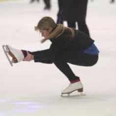

Figure Skating!
What is figure skating?
Figure skating is defined by by the Merriam-Webster dictionary as "skating characterized by the performance of various
jumps, spins, and dance movements". It began in the mid 1800s, when ice skaters started jumping and spinning in their performances. Since then, figure skating has eveolved from being a pass-time for upperclassmen to being an Olympic sport that many people participate in today.
Figure skating terminology
When watching figure skating competitions on television, such as the Olympics, you may hear some unfamiliar terms referring to a skater's jumps or turns, said by news reporters, or the judges of the competition. Below is a list of many common terms you may hear.
Upright Spins
Arabesque
 Arabesque is a term that is also used in some dance forms,such as ballet. This move is when a skater raises their leg behind them at almost a 180 degree angle, as displayed in the picture above. This move is used in camel spins, shown above.
Arabesque is a term that is also used in some dance forms,such as ballet. This move is when a skater raises their leg behind them at almost a 180 degree angle, as displayed in the picture above. This move is used in camel spins, shown above.
Besti Squat
 Besti squats, named after Natalia Bestemianova, are where the skater squats down with their legs spread and skates on the outer edges of their skates.
Besti squats, named after Natalia Bestemianova, are where the skater squats down with their legs spread and skates on the outer edges of their skates.
Biellman Spins
The name of this spin comes from Denise Biellman. She did not invent it, but she made it popular. Biellman Spins are advanced spins, but very popular in competitions. They are done by pulling on your back leg and raising it straight behind your head, similar to the needle in gymnastics.There are many variations of thismove,such as the one-handed Biellman, and the Half-Biellman. The picture above displays a full Biellman.
Shotgun Spins
 Shotgun spins are upright spins is which your leg that is not on the ground is held straight in front of you. This move is also called a spiral spin.
Shotgun spins are upright spins is which your leg that is not on the ground is held straight in front of you. This move is also called a spiral spin.
Sit Spins
Basic Sit Spins
 A basic sit spin is where the skater sits on the leg they usually skate with. The other leg is positioned straight in front of them, their arms are raised, and they skate in a circle.
A basic sit spin is where the skater sits on the leg they usually skate with. The other leg is positioned straight in front of them, their arms are raised, and they skate in a circle.
Shoot The Duck position

The Shoot The Duck position is a variation of the basic sit spin, except the skater glides backwards or forward.
Broken Leg Sit Spin

-
Camel Spins
Camel Spins are another category of skating spins. Camel spins are where the skater's leg is held behind them, and their knee must be higher than their hip.
Figure skating costumes
Injuries in Figure Skating
Figure skating, just like any sport, can be dangerous if you are ill-prepared. To prevent injury, make sure you are wearing skates that fit you. If you are learning to skate, helmets are highly recommended.